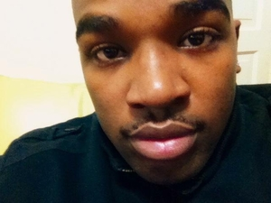

Everyone has a vision for the future. My vision is two-part, because not only do I want to see the vision come to fruition, but I want to see it continued and passed along through future generations. I want my vision to become a constant in society so that positive change is not just a temporary success, but a long term continuously improved goal. My vision is to see young black males in the nation pursue and achieve higher education and success. I want to end the perpetual cycle of young men abandoning education for the glamour of criminal and celebrity lifestyles, only to end up poor, uneducated and on the fast track to the prison system. My vision fulfilled, will reach so many young black men in America who need to be purposefully guided, loved and encouraged. Positive impacts far outweigh the sacrifices that must be made and the time and resources that must be contributed to make this vision a reality. I will empower young men in America, to grow together, unite together, build businesses together and change the world together.
Values are very important to me. They define who I am, where I’ve come from, and where I am going in life. Some of my values include ambition, responsibility, loyalty, honesty, innovativeness, efficiency, determination and discipline. These are just a few of the values I hold close to my character and try to maintain in my every-day life. I believe, where there is a lack of ambition, there is a lack of success. Similarly, if you cannot maintain a sense of responsibility, determination or discipline, you will not have structure in your life. Without structure, things tend to appear as if they’re sturdy, but they soon fall apart. In order to be successful in leadership and in life, we must be able to clearly identify and hold onto our Values so that we remember why we’re here, and what we’re here to do. 
One of my greatest strengths is that I am a learner. I truly enjoy the process and invaluable benefits of learning. The “StrengthsFinder” assignment helped me realize that I always get excited at the idea of learning new things. I enjoy learning something, and then sharing it with someone right away. I like to practice what I’ve learned so that I can be more efficient and beneficial when I am paying the knowledge forward. Being a good learner, helps me to thrive in dynamic environments and gives me the confidence to always seek more and never be afraid to ask questions. I learned that I am more focused on the process and the benefit of what I have learned, as opposed to getting to a specifically identified or tangible goal. This strength is identified, through my pursuance of a higher education, and my continued pursuit of my Master’s Degree. My love for learning is also expressed, through my everyday life experiences. I view every new interaction with someone as a new opportunity to learn a new concept or task. I believe that I have a uniqueness that is clearly expressed in the way that I learn. I don’t believe leaning has to always be completed through traditional means, I believe you can learn from good and bad situations, and ones that are your own and ones that are not.
“My philosophy about leadership, is simply stepping outside of the box and believing in yourself. If you want to be a successful leader, you must be determined, self-motivated and passionate. Those three things drive you to reach your ultimate goal.”–Alonzo Richardson
I come from a low socioeconomic background. Many critical life events influenced who I am today. I was encouraged to participate in extracurricular activities so that I wouldn’t get distracted by my negative environment. My main outlet was wrestling. Participating in wrestling influenced me to become a better person, get a better education and reach the same successes as my mentors, coaches and admirable peers. Wrestling encouraged me to want to go to school, and without it, I doubt that I would be here today.
Currently, I am on track to graduate from Eastern Michigan University with a B.S.W in December 2014. I will continue my education at the University of Michigan in 2015, to pursue my Master’s Degree in Social Work. I currently am involved in many different volunteer programs, such as Meals on Wheels, and the Parkridge Community Center. I find much value in my volunteer work and it has taught me more about the true meaning of leadership, and paying what you have gained from life, forward.
After Graduate School, my plans for the next 5 years, will be to work as a youth mentor in a Juvenile facility. I also plan to start the process of creating my own Non-Profit Organization for adolescent boys. As time goes, on I will develop more goals and endeavors to better my community and promote social change. I define success as what you make it. Success has no limits, and is based on the individual trying to reach it. My success includes a lifetime of giving back to my Community, and self-education, as well as the education of those around me.
I am most motivated by seeing young black men in America come from broken homes and environments, and become successful in spite of the negative statistics. I am passionate about getting young black men off of the street, because I myself have experienced the hardships of being a black male raised in some of the worst circumstances, however, through guidance and education, I was able to learn how to be successful and achieve any goal placed before me. This ties in directly with my personal values, because I want to share the importance and significance of these values with the young men that I mentor. It is my passion to pass along any values and characteristics that helped me become a successful black man in America.
There are many ways I can achieve the goals I have set. Some of those ways include, becoming a Professor, later in life, becoming a Social Worker, mentoring young men, and opening a Non-Profit Organization to aid and guide young men in the Community. While these are all different options, I do plan to pursue them all. All of these options offer pro’s and con’s. For example, a pro of becoming a Social Worker is that I would be able to directly connect with young black men in the adolescent stage, and help them get on the right track before it’s too late. A con of becoming a Social Worker, is having to work within the boundaries of the legal system and not allowing my personal passions to cloud my professional judgment.
I am currently working on growing my Network of professionals by communicating with Washtenaw Community College and more specifically, the Director of Parkridge Community Center, as well as the Director of Meals on Wheels Ypsilanti. I also have connections directly within the Community, including elderly, young adults, pastors and even political professionals. Anyone in a position of influence, is someone that I could potentially network with to fulfill these goals.
The goal of creating a social change among young black men will be accomplished, first, by me graduating with my B.S.W. The next step will be to pursue my Master’s Degree and start developing a Non-Profit.
My goal of completing my current educational endeavors will take about 2-3 years. I don’t have a specific date identified at this time, however, it will most likely be the day I graduate with my Master’s Degree and begin working in my field of study.
As a result of participating in the LEAD 201 course, I have gained and grown in many ways. I’ve learned about not only the benefits to the people being led, but I’ve also learned about the benefits I personally receive from being a leader. I’ve learned about the different styles of leadership, and how they fit different atmosphere’s, such as the community vs the classroom vs a personal mentorships.
As a result of participating in the LEAD 201 course, I am committed to achieving success and fulfillment as I guide young adults to a better and more fulfilling life, as a future and current leader.
One year from now, my goal as a leader is to be a graduate student that continues to mentor young black males. I will be a leader in Community education as it relates to black achievement and will continue to make it my priority to show others how to not only become leaders themselves, but how to continue developing their leadership abilities.
In order to be a leader on campus, you have to first have the desire to be a leader. Based on my experiences, you must have courage and stamina to continue through adversity and difficult situations. I would like to be viewed as an encourager, and someone who empowers others to positive thinking and entrepreneurship. The advice that I would give to people that want to become leaders in their Communities, is to never lose focus of the ultimate goal and to never give up. Remember there are people counting on you and your determination and discipline can directly impact their lives.